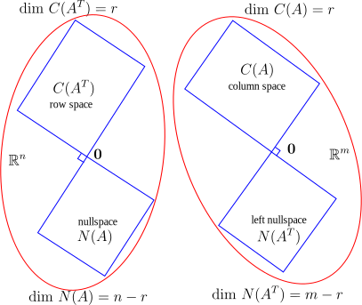
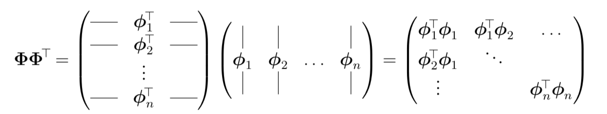
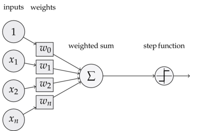
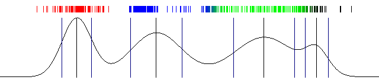
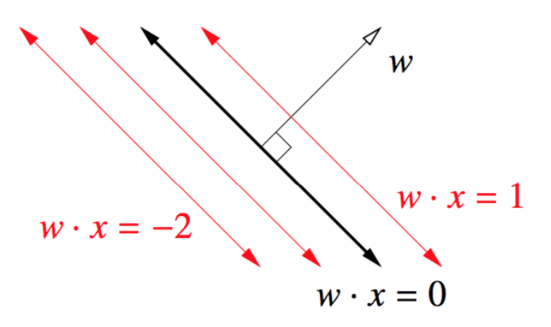
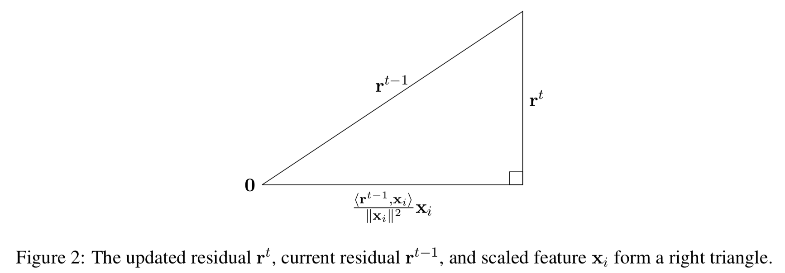
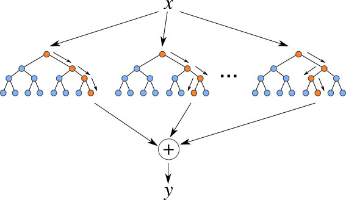

machine learning
press esc to navigate slides
| Section | Topic |
|---|---|
| general | intro, linear algebra, gaussian, parameter estimation, bias-variance |
| regression | lin reg, LS, kernels, sparsity |
| dim reduction | dim reduction |
| classification | discr. vs. generative, nearest neighbor, DNNs, log. regression, lda/qda, decision trees, svms |
| optimization | problems, algorithms, duality, boosting, em |
pre-reqs
- linear algebra
- matrix calculus
- probability
- numpy/matplotlib
reference
introduction
what's in an ml problem?
- problems + data
- model
- loss function
- optimization algorithm
common ml problems
- regression
- classification
- density estimation
- dimensionality reduction
types of learning
(by amount of labels)
- supervised
- ~semi-supervised
- reinforcement
- unsupervised
categorizing models
- what problems do they solve?
- how "complex" are they? (bias/variance)
- discriminative or generative?
visual roadmap

parameters and hyperparameters
- result of optimization is a set of parameters
- parameters vs. hyperparameters
train vs test
- training vs. testing error
- why do we need cross-validation?
- example: train, validate, test
linear algebra review
matrix properties
- nonsingular = invertible = nonzero determinant = null space of zero
⟹ square⟹ rank = dimension- ill-conditioned matrix - close to being singular - very small determinant
vector norms
Lp− norms:||x||p=(∑i|xi|p)1/p ||x|| usually means||x||2 ||x||2=xTx
matrix norms
- nuclear norm:
||X||∗=∑iσi - frobenius norm = euclidean norm:
||X||2F=∑iσ2i‾‾‾‾‾‾√ - spectral norm =
L2 -norm:||X||2=σmax(X)
cauchy-shwartz inequality
equivalent to the triangle inequality
jensen's inequality
f(E[X])≤E[f(X)] for convex f

subspaces

eigenvalues
- eigenvalue eqn:
Ax=λx⟹(A−λI)x=0 det(A−λI)=0 yields characteristic polynomial
eigenvectors

eigenvectors in pca

evd
- diagonalization = eigenvalue decomposition = spectral decomposition
- assume A (nxn) is symmetric
A=QΛQT - Q := eigenvectors as columns, Q is orthonormal
Λ diagonal
evd extended
- only diagonalizable if n independent eigenvectors
- how does evd relate to invertibility?

svd
nxp matrix:
- cols of U (nxn) are eigenvectors of
XXT - cols of V (pxp) are eigenvectors of
XTX - r singular values on diagonal of
Σ (nxp)- square roots of nonzero eigenvalues of both
XXT andXTX
- square roots of nonzero eigenvalues of both
svd vs evd
- evd
- not always orthogonal columns
- complex eigenvalues
- only square, not always possible
- svd
- orthonormal columns
- real/nonnegative eigenvalues
- symmetric matrices: eigenvalues real, eigenvectors orthogonal
eigen stuff
- expressions when
A∈𝕊 det(A)=∏iλi tr(A)=∑iλi λmax(A)=supx≠0xTAxxTx λmin(A)=infx≠0xTAxxTx
positive semi-definite (psd)
- defn 1: all eigenvalues are nonnegative
- defn 2:
xTAx≥0∀x∈Rn
psd notation
- vectors:
x⪯y means x is less than y elementwise - matrices:
X⪯Y meansY−X is PSDvTXv≤vTYv∀v
matrix calculus
- gradient vector
∇xf(x) - partial derivatives with respect to each element of function
jacobian
function f:
hessian
function f:
=⎡⎣⎢⎢⎢⎢⎢⎢⎢⎢⎢⎢⎢⎢⎢∂2f∂x21∂2f∂x2∂x1⋮∂2f∂xn∂x1∂2f∂x1∂x2∂2f∂x22⋮∂2f∂xn∂x2⋯⋯⋱⋯∂2f∂x1∂xn∂2f∂x2∂xn⋮∂2f∂x2n⎤⎦⎥⎥⎥⎥⎥⎥⎥⎥⎥⎥⎥⎥⎥ nifty tricks
xTAx=tr(xxTA)=∑i,jxiAi,jxj tr(AB) = sum of elementwise-products- if X, Y symmetric,
tr(YX)=tr(Y∑λiqiqTi) A=UDVT=∑iσiuivTi⟹A−1=VD−1UT
linear regression
regression
- what is regression?
- how does regression fit into the ml framework?
feature engineering
- what is x?
- what is y?
ϕ(x) can be treated likex
lin. regression intuition 1

lin. regression setup
n = number of data points
d = dimension of each data point
lin. regression intuition 2

regularization
| Model | Loss |
|---|---|
| OLS | |
| Ridge | |
| Lasso | |
| Elastic Net |
ols solution
ŵ OLS=(XTX)−1XTy - 2 derivations: least squares, orthogonal projection
ridge regression intuition

parameter estimation
probabilistic model
- assume a true underlying model
- ex.
Yi∼(θTXi,σ2) - this is equivalent to
P(Yi|Xi;θ)=(θTXi,σ2)
bayes rule

likelihood
p(x|θ) ?p(y|x;θ) ?p(x,y|θ) ?→ depends on the problem + model
mle - maximum likelihood estimation
θ̂ MLE=argmaxθ - associated with frequentist school of thought
how to do mle problems
- write likelihood (product of probabilities)
- usually take log to turn product into a sum
- take derivative and set to zero to maximize (assuming convexity)
map - maximum a posteriori
θ̂ MAP=argmaxθp(θ|x)=argmaxθp(x|θ)p(θ)=argmaxθ[logp(x|θ)+logp(θ)] p(x) disappears because it doesn't depend onθ
- associated with bayesian school of thought
mle vs. map
θ̂ MLE=argmaxθp(x|θ)⏞likelihood θ̂ MAP=argmaxθp(θ|x)⏞posterior=argmaxθp(x|θ)p(θ)⏞prior θ̂ Bayes=Eθp(θ|x)
bias-variance tradeoff
intuition 1

intuition 2

bias
- bias of a model:
E[f̂ (x)−f(x)] - expectation over drawing new training sets from same distr.
- could also have bias of a point estimate:
E[θ̂ −θ]
variance
- "estimation error"
- variance of a model:
V[f̂ (x)]=E[(f̂ (x)−E[f̂ (x)])2] - expectation over training sets with fixed x
bias-variance trade-off
- mean-squared error of model:
E[(f̂ (x)−f(x))2] - = bias
2 + variance - =
E[f̂ (x)−f(x)]2 +E[(f(x)^−E[f(x)^])2]
- = bias

multivariate gaussian
definitions
p(x|μ,Σ)=1(2π)n/2|Σ|1/2exp[−12(x−μ)TΣ−1(x−μ)] μ is mean vectorΣ is covariance matrix

understanding Σ

understanding Σ−1

mle gaussian estimation
μ̂ ,Σ̂ =argmaxP(x1,...,xn|μ,Σ) μ̂ =1n∑xi Σ̂ =1n∑(xi−μ̂ )(xi−μ̂ )T
advanced linear least squares
weighted least squares
- weight certain points more
ωi ŵ wls=argmin(∑ωi(yi−xTiw)2) =(XTΩX)−1XTΩy
generalized least squares
- noise variables are not independent

overview

total LS intuition
add i.i.d. gaussian noise in x and y - regularization

total LS solution
ŵ TLS=(XTX−σ2I)−1XTy - here,
σ is last singular value of[Xy]
- here,
dimensionality reduction
pca intuition
orthogonal dimensions that maximize variance of

pca in python
X -= np.mean(X, axis=0) #zero-center data (nxd)
cov = np.dot(X.T, X) / X.shape[0] #get cov. matrix (dxd)
U, D, V = np.linalg.svd(cov) #compute svd, (all dxd)
X_2d = np.dot(X, U[:, :2]) #project in 2d (nx2)
pca in practice
- eigenvalue represents prop. of explained variance:
∑λi=tr(Σ)=∑Var(Xi) - use svd
- adaptive PCA is faster (sequential)
cca
- linearly independent dimensions that maximize correlation between
X,Y invariant to scalings / affine transformations of X, Y

correlations

kernels
why are kernels useful?

ex. ridge regression
- reformulate the problem to be computationally efficient + nonlinear
- matrix inversion is ~
O(dim3)
- matrix inversion is ~
ŵ =(XTX⏟dxd+λI)−1XTy ~ faster whend<<n ŵ =XT(XXT⏟nxn+λI)−1y ~ faster whenn<<d
kernels

ϕTiϕj=ϕ(xi)Tϕ(xj)
ex. kernel ridge regression
- linear kernel:
wˆ=XT(XXT+λI)−1y - generic kernel:
wˆ=ϕT(ϕϕT+λI)−1y - at test time,
yˆ(x)=ϕ(x)ϕT(ϕϕT+λI)−1y - only requires kernel products!
- at test time,
kernel trick ex.
x=[x1,x2] ϕ(x)=[x21x222‾√x1x22‾√x12‾√x21]T
- another ex. rbf kernel:
k(x,z)=exp(−γ||x−z||2)
different from kernel regression...
- note, what discussed here is different from the nonparametric technique of kernel regression:
yˆh(x)=∑ni=1Kh(x−xi)yi∑nj=1Kh(x−xj) - K is a kernel with a bandwidth h
optimization problems
overview
- minimizing things
- ex.
argminθ∑(yi−f(xi;θ))2

convexity
Hessian
∇2f(x)⪰0∀x f(x2)≥f(x1)+∇f(x1)(x2−x1)
convexity continued
strong convexity + smoothness

smoothness
M-smooth = Lipschitz continuous gradient:
| Lipschitz continuous f | M-smooth |
|---|---|
 |
 |
optimization algorithms
gradient descent

when do we stop?
- validation error stops changing
- changes become small enough
stochastic gradient descent

momentum demo
θ(t+1)=θ(t)−αt∇f(θ(t))+βt(f(θ(t))−f(θ(t−1)))momentum
newton-raphson

- apply to find roots of f'(x):
θ(t+1)=θ(t)−∇2f(θ(t))−1∇f(θ(t))
gauss-newton
- modify newton's method assuming we are minimizing nonlinear least squares
θ(t+1)=θ(t)−∇2f(θ(t))−1∇f(θ(t)) θ(t+1)=θ(t)+(JTJ)−1JTΔy J is the Jacobian
neural nets
surprisingly effective
- it predicts: vision, audio, text, ~rl
- it's flexible: little/no feature engineering
- it generalizes, despite having many parameters
perceptron
 
training a perceptron
- loss function:
L(x,y;w)=(ŷ −y)2 - goal:
∂L∂wi for all weights - calculate efficiently with backprop
backprop demo
also see nn demo playground
going deeper

coding DNNs in numpy
from numpy import exp, array, random
X = array([[0, 0, 1], [1, 1, 1], [1, 0, 1], [0, 1, 1]])
Y = array([[0, 1, 1, 0]]).T
w = 2 * random.random((3, 1)) - 1
for iteration in range(10000):
Yhat = 1 / (1 + exp(-(X @ w)))
w += X.T @ (Y - Yhat) * Yhat * (1 - Yhat)
print(1 / (1 + exp(-(array([1, 0, 0] @ w))))
coding DNNs in advanced numpy
import tensorflow as tf
import torch
cnns

cnns 2

rnns

connection to the brain?

discriminative vs. generative
definitions

- discriminative:
p(y|x) - generative:
p(x,y)=p(x|y)p(y)
sorting models
bayes classifier
hmms
lda/qda
linear regression
svms
nearest neighbor
decision trees / random forests
bayes classifier
- risk:
𝔼(X,Y)[L(f(x),y)]=∑xp(x)∑yL(f(x),y)p(y|x) - bayes classifier:
f∗(x)=argminy∑yL(y,y′)p(y′|x) - given x, pick y that minimizes risk
bayes classifier example
- with 0-1 error:
f∗(x)=argmaxyp(y|x)=argmaxyp(x|y)⋅p(y) - let y be sentiment (positive or negative)
- let x be words
logistic regression
definitions

σ(z)=11+e−z P(Ŷ =1|x;w)=σ(wTx) - threshold to predict
- not really regression
comparison with OLS


loss functions
- log-loss = cross-entropy:
−∑xp(x)logq(x) p(x) truey q(x) predicted probability of y
- corresponds to MLE for Bernoulli

multiclass
- one-hot encoding:
[1,0,0] ,[0,1,0] ,[0,0,1] - softmax function:
σ(z)i=exp(zi)∑jexpzj - loss function still cross-entropy

training
- no closed form, but convex loss
⟹ convex optimization!- minimize loss on cross-entropy (where p(x) is modelled by sigmoid)
- or maximize likelihood
gaussian discriminant analysis
generative model

assumptions
ŷ =argmaxyp(y|x)=argmaxyP(x|y)p(y) P(x|y)∼(μy,Σy) : there are |Y| of thesep(y)=nyn : 1 of these
lda vs. log. regression
- differences
- generative
- treats each class independently
- same
- form for posterior (sigmoid / softmax)
dimensionality reduction

multiclass lda vs. qda

em
k-means (2d)

mixture of gaussians (2d)


mixture of gaussians (1d)

EM
want to maximize complete log-likelihood
- expectation step - values of z filled in
- maximization step - parameters are adjusted based on z
simplifying the math
- E:
q(t+1)(z|x)=argminqD(q||θ(t)) - lower bound on complete log-likelihood (pf: Jensen's inequality)
- M:
θ(t+1)=argminθD(q(t+1)||θ)
svms
note 20 is good
perceptron/logistic reg. problems

- doesn't find best solution
- unstable when data not linearly separable
what's w?

how far are points?
decision boundary: {

hard margin intuition
hard margin formulation
- let
m=1/||w||2⟹ unique soln
soft margin

binary classification
can rewrite by absorbing
summarizing models

- svm: hinge loss
- log. regression: log loss
- perceptron: perceptron loss
binary classification
| Model | |
|---|---|
| Perceptron | |
| Linear SVM | |
| Logistic regression |
duality
problem
primal
p∗=minf0(x)s.t.fi(x)≤0hi(x)=0 dual
d∗=maxλ,νinfxf0(x)+∑λifi(x)+∑νihi(x)LagrangianL(x,λ,ν)dual functiong(λ,ν)s.t.λ⪰0 comments
dual function
g(λ,ν) always concaveλ⪰0⟹g(λ,ν)≤p∗
(λ,ν) dual feasible ifλ⪰0 (λ,ν)∈domg
duality
weak duality:
d∗≤p∗ - optimal duality gap:
p∗−d∗
- optimal duality gap:
strong duality:
d∗=p∗ ~ requires more than convexity
nearest neighbor
intuition

comments
- no training, slow testing
- nonparametric: huge memory
- how to pick distance?
- poor in high-dimensions
- theoretical error rate
sparsity
constrained form
minw||Xw−y||22s.t.||w||1≤k minw||Xw−y||22s.t.||w||2≤k 
dual form
lasso:
Δ=λ
ridge:
Δ=2λw
lasso optimization
- coordinate descent: requires jointly convex
- closed form for each
wi - iterate, might re-update
wi
- closed form for each
matching pursuit
- start with all 0s
- iteratively choose/update
wi to minimize||y−Xw||2

orthogonal matching pursuit
- at each step, update all nonzero weights
decision trees / random forests
decision tree intuition

training
- greedy - use metric to pick attribute
- split on this attribute then repeat
- high variance
information gain
maximize H(parent) - [weighted average]
- often picks too many attributes

info theory
- maximize
I(X;Y)≡ minimizeH(Y|X)

split functions
- info gain (approximate w/ gini impurity)
- misclassification rate
- (40-40); could be: (30-10, 10-30), (20-40, 20-0)

stopping
- depth
- metric
- node proportion
- pruning
random forests
- multiple classifiers
- bagging = bootstrap aggregating: each classifier uses subset of datapoints
- feature randomization: each split uses subset of features

random forest voting
- consensus
- average
- adaboost
regression tree
- stop splitting at some point and apply linear regression
other values
- missing values - fill in with most common val / probabilistically
- continuous values - split on thresholds
boosting
sequentially train many weak learners to approximate a function
adaboost
- initialize weights to 1/n
- iterate
- classify weighted points
- re-weight points to emphasize errors
- finally, output error-weighted sum of weak learners
adaboost comments
- derived using exponential loss risk minimization (freund and schapire)
- test error can keep decreasing once training error is at 0
gradient boosting
- weak learners applied in sequence
- subtract gradient of loss with respect to current total model
- for squared loss, just the residual
- models need not be differentiable
xgboost
- very popular implementation of gradient boosting
- fast and efficient